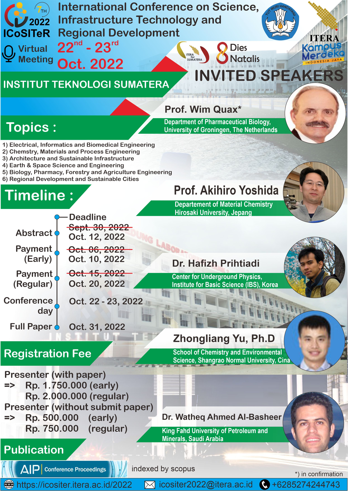

ICoSITer 2022
Institut Teknologi Sumatera (ITERA) menggelar International Conference on Science, Infrastructure Technology, and Regional Development (ICoSITeR) 2022, sebuah konferensi internasional yang membahas perkembangan ilmu pengetahuan, teknologi infrastruktur, dan pembangunan regional. Acara ini berlangsung secara virtual pada 22-23 Oktober 2022 sebagai bagian dari perayaan Dies Natalis ke-8 ITERA.
Topik Konferensi
ICoSITeR 2022 menghadirkan berbagai tema yang relevan dengan perkembangan teknologi dan infrastruktur, antara lain:
- Ilmu Kedokteran, Informatika, dan Teknik Biomedis
- Kimia, Material, dan Teknik Proses
- Rekayasa Infrastruktur Berkelanjutan dan Teknologi Informasi
- Teknik dan Ilmu Keantariksaan
- Farmasi, Kehutanan, dan Teknik Pertanian
- Pembangunan Regional dan Kota Berkelanjutan
Pembicara Tamu
Konferensi ini menghadirkan para pembicara terkemuka dari berbagai negara, yaitu:
- Prof. Wim Quax (University of Groningen, Belanda) - Ahli Biologi Farmasi
- Prof. Akihiro Yoshida (Hirosaki University, Jepang) - Pakar Kimia Material
- Dr. Hafizh Prihadi (Institute for Basic Science, Korea) - Peneliti Fisika Bawah Tanah
- Zhongliang Yu, Ph.D (Shangrao Normal University, China) - Ahli Kimia dan Ilmu Lingkungan